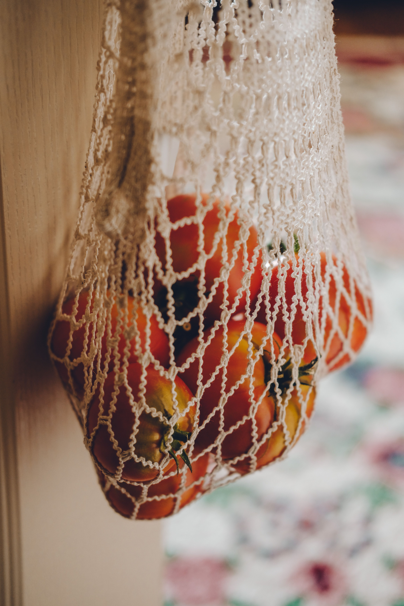
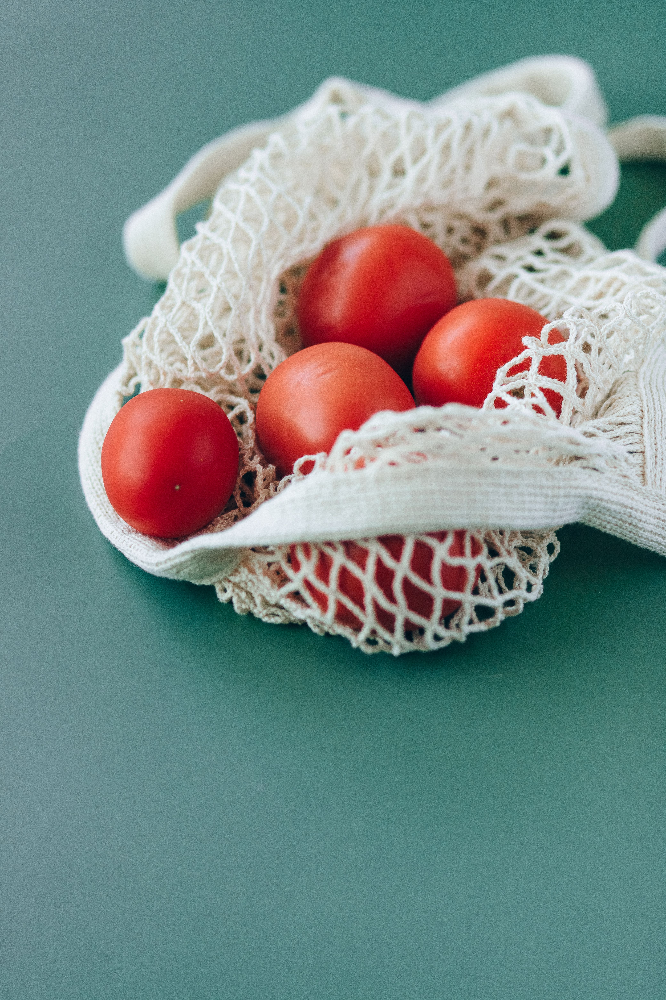
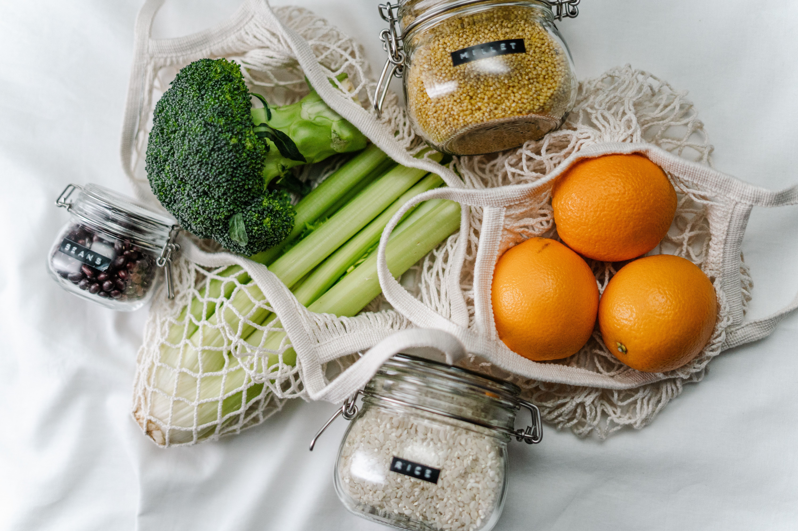
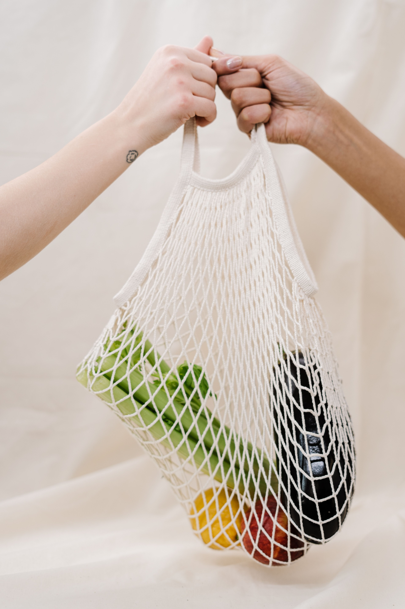
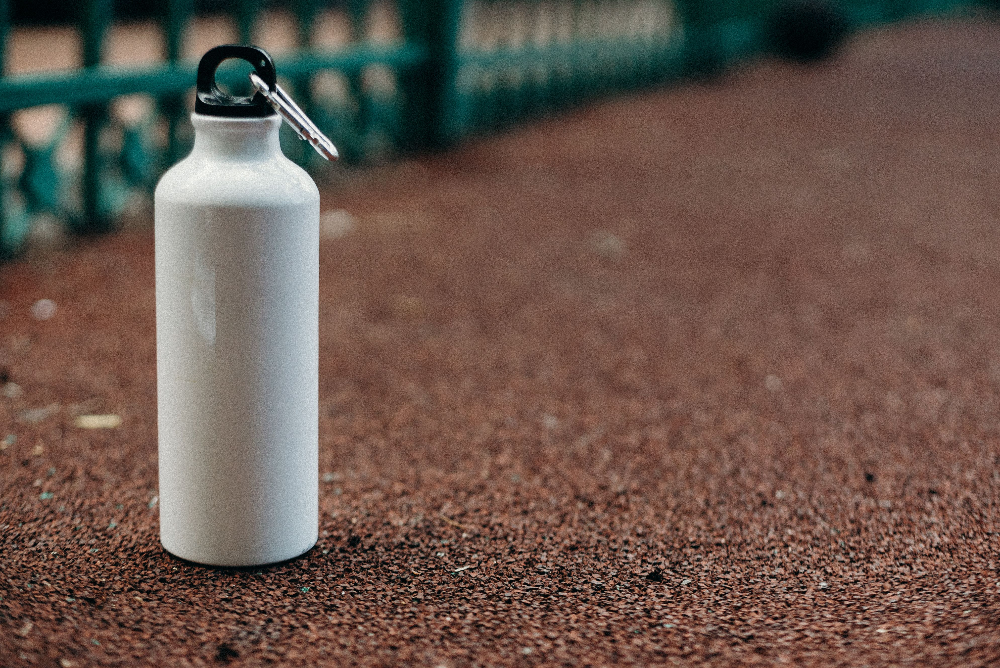

Shopping & Food
Every trip to the shop is a chance to choose well. This ideas will help you waste less, eat well and save money.

Smarter shopping and food choices
Six habits that makes a real difference.
Reusable shopping bags
A cloth or sturdy bag can be used hundreds of times.
- Keep one in your coat, car or work bag.
- Wash cloth bags now and then.
Reducing plastic packaging
Choose products with little or no wrapping when you can.
- Pick loose fruit and vegetables.
- Buy larger sizes of things you use often.
Local and seasonal food
Food grown nearby and in season often travels less and tastes fresher.
- Visit a farmers market.
- Check which fruit and vegetables are in season.
Planning meals
Knowing what you will cook helps you buy only what you need.
- Write a list before you shop.
- Check your cupboards first.
Reducing food waste
Wasted food also wastes the water, energy and effort used to grow it.
- Use older food first.
- Freeze leftovers and bread.
Reusable bottles
Single-use bottles and cups add up quickly.
- Carry a bottle and refill it.
- Use usual cups rather than single-use ones.
Shopping gallery
Always use reusable mesh bag, choose seasonal fruits and vegetables and use reusable bottles.




Try This Today
- Put a reusable bag next to your front door.
- Look in your fridge and plan one meal using what you already have.
- Fill a bottle with water before you leave the house.